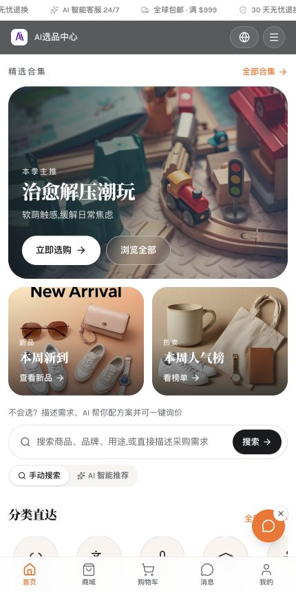
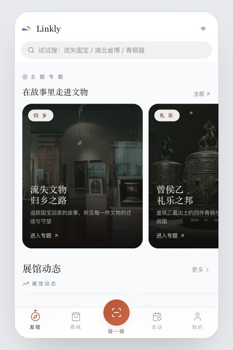

南京
旅行内容待补充
先把去过的地方留在这里。照片、食物和途中发生的小事，以后再慢慢填进来。
旅行内容待补充
旅行内容待补充
旅行内容待补充
旅行内容待补充
旅行内容待补充
旅行内容待补充
旅行内容待补充
旅行内容待补充
旅行内容待补充
经济学 · 本科

用 AI 重构跨境选品
我参与从 0 到 1 搭建一个多语言选品与分销平台：让买家更快找到合适的商品，也让代理、支付和佣金结算真正形成闭环。
跨境交易真正难的并不只是“把商品放上网”，而是选品信息不对称、多语言售前成本高，以及分销关系难追踪。我从买家、代理与运营三方重新梳理了产品路径。
小额商品适合直接支付，大额设备更需要询价与销售跟进。于是我没有强行统一交易流程，而是设计“小额支付 × 大额询价”的双路径，在体验、开发成本与商业风险之间取得平衡。
我完成竞品研究、角色矩阵与关键业务流程设计，重构访客、普通代理、子站代理和管理员四类权限，并规划 Stripe、支付宝、微信与线下二维码支付。Lovable 是我用来快速搭建和验证可交互原型的工具；我的重点是需求判断、流程设计、PRD 与 6 轮迭代验证，而不是把平台生成的代码量当作成果。

让文物开口说话
Linkly 把 NFC 实体文物卡与移动端 Web App 连在一起。游客碰一碰卡片，就能继续听文物讲故事、对话、收藏与分享，让一次参观变成可以延续的关系。
博物馆通常在游客离馆后就失去了联系，文创商品也很难持续带来互动与复购。我从游客、馆方与平台三方需求出发，把实体卡购买、数字内容访问、收藏分享和二次触达串成完整链路。
AI 文物不需要“什么都知道”，而要在可信范围内讲对故事。我用 20 家博物馆、400 件文物的种子资料建立知识边界与兜底话术；同时设计语音缓存，让情绪化 TTS 的重复生成成本降低约 30%。
我负责卡片绑定、碰卡唤起、礼赠激活、定制卡与馆方履约等关键流程，并用 Lovable 快速搭建可交互原型，在约 30 轮迭代中验证体验与业务闭环。项目最终形成多份 PRD、功能审计方案与 18 页 Web Deck。
在 1000 元预算内，验证一个社区的真实性命题
Honeytry 是一个基于校园 LBS 的真实互助社区。比起急着做增长，我更在意先回答：陌生人为什么愿意相信这里的内容？
校园内容常被广告、失真信息和模糊定位淹没。我提出信任分、举报机制、内容识别和激励体系，并划出商业内容专区，让真实内容不必和广告混在一起。
在不超过 1000 元的预算里，我把拉新、内容种子、社群维护和反馈收集组合成一套启动方案，一周获得 200+ 用户与 150+ 条优质内容。
首月新增超过 500 人后，我继续搭建垂直社群和运营 SOP，希望让增长不只依赖一次活动，而是沉淀为可以复用的社区机制。
供应链减碳解决方案 · 团队协作 2025.10 — 2025.11
一家时尚公司超过 90% 的碳排放来自供应链。我们要做的不是再写一份倡议，而是设计一套供应商愿意参与、企业能够执行的减碳机制。
团队共同梳理中国、欧盟与香港的披露要求，并研究 H&M、Inditex 等企业的 Scope 3 实践，把复杂信息收束为准入、数据、能力和激励三类核心问题。
我们用 TOPSIS 建立供应商评估逻辑，再设计“准入评估—分层管理—协同创新—绿色采购激励”的参与机制，并将落地拆成基线摸底、数字化管理与全面挂钩三个阶段。
总负责人、商业负责人 2026.02 — 至今
我们尝试用一层无需供电的辐射制冷材料，让普通头盔在 5 分钟内完成升级，并在户外环境中实现 5–13℃ 的被动降温。
头盔内部超过 55℃ 的确是痛点，但“觉得热”不等于愿意付费。于是我把 600+ 份调研继续拆到强需求与支付意愿，最终识别出 82.09% 的痛点覆盖率与 45% 的强需求人群。
团队从实验室薄膜转向更适合规模化的工业喷涂，并完成 50+ 人次真实场景测试。我同步设计先 B 端验证、再 C 端扩展的商业路径，推动项目进入国家科技园与 Z+ 科创营，并完成公司注册。
从一台桌面设备出发，重新理解儿童专注力
X-Focus 是“桌面陪伴硬件 × App”的儿童专注力评估方案。摄像头捕捉学习状态，数据传至云端分析，再在家长端生成报告；四维框架进一步把模糊的“孩子分心了”拆成分配、转移、广度与稳定性。
产品不止给出一次测评，而是连接 To Do List、实时专注数据、长期成长曲线、训练游戏与家长课程。我完成竞品拆解、PRD 和低保真原型，并在价格敏感与持续服务之间设计 159 元硬件入口与后续内容服务。
为赫莲娜设计“AI 私人顾问 × 先锋女性圈层”的增长方案
团队判断，高端美妆进入存量竞争后，赫莲娜的机会不再是触达更多人，而是长期理解高势能女性。方案用 AI Skin Concierge 管理皮肤状态，用 Future Masters Circle 连接身份、资源与成长。
两套引擎共享统一用户档案，并被组织进“内容触达—AI 测评—进入圈层—产品购买—核心会员”的五层漏斗。团队同时设计了六个月、三阶段的试点路线，以及隐私、AI 建议边界、柜台执行和品牌调性的风险指标。
公益咨询项目
项目内容待补充
持续记录我用 AI 把想法做成产品的过程
项目内容待补充
实习成员 → 正式成员 → 运营管培生 → 财务负责人
这不是一次直接的职务跳转。我先经历实习期，成为正式成员后继续参与项目与事务性工作，再成为管培生和财务负责人；每一步都来自前一阶段真实的协作与交付。
实习期到正式成员阶段，我深度参与 X-Focus 的市场调研、用户画像、功能拓展与方案汇报，也完成贝恩杯 AI in ESG、植物奶营销和即时零售商业模式等练习。相比只听方法论，我更早开始在资料搜集、产业链分析、产品文档和英文方案中反复验证它。
成为管培生后，我开始同时处理硬科技项目孵化、训练营招生与运营、全员大会和团队支持等多线程事务：拆解任务、协调不同角色，并在现场变化中及时补位。跟进辐射制冷项目，也让我把产品与商业判断延伸到硬科技孵化。
成为财务负责人后，我负责月度现金流与预算记录，核验发票、订单、支付与行程材料，并把合规边界、PDF 规范和常见问题整理成审核清单；在审批系统中给出明确的通过或驳回理由，同时向各部门同步规则变化、与学校财务对接预算及系统问题。它训练的不只是细致，而是把复杂要求变成可复用流程的能力。
宣传部成员 → 负责人
从自己做内容，到带一支 10+ 人的团队一起讲好学院的故事。这段经历让我学会在审美、信息准确与传播效率之间做选择。
我参与“经声经视”“经津有味”等栏目，从资料整理、选题结构到视觉呈现完成数十篇推文与视频，也承担新生晚会、游园会等活动的宣传设计与现场协同。
成为负责人后，我带领 10+ 人团队安排选题、分工和审核节奏。团队最终获得“部门之星”，对我而言更重要的是形成了一套大家都能顺畅协作的内容流程。
CET-4 / 660+
Figma · 墨刀 · XMind · 飞书 · PPT
GPT · Claude Code · Lovable
Excel · SQL · Python